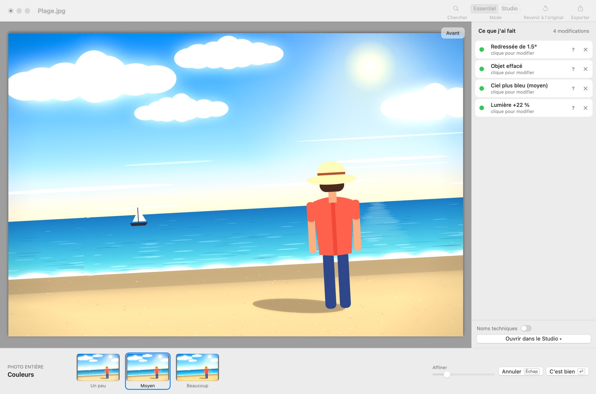
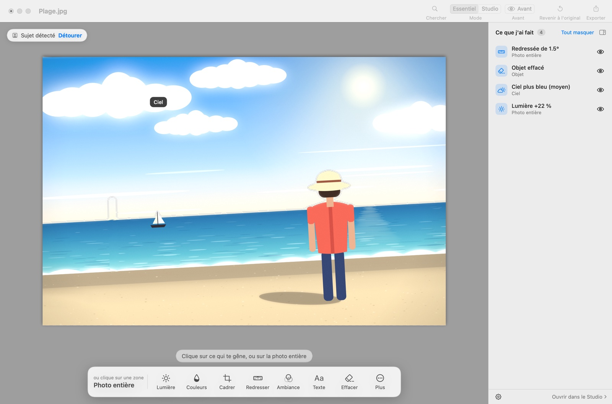
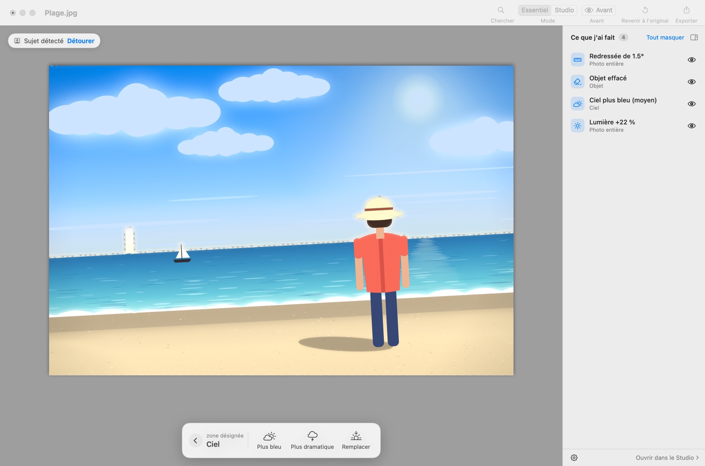
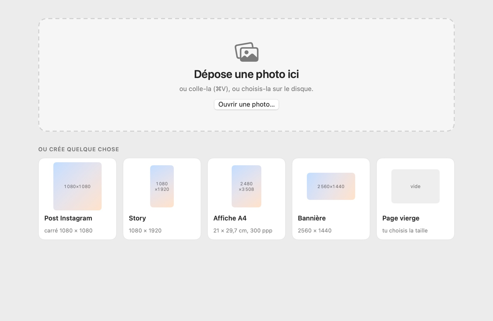
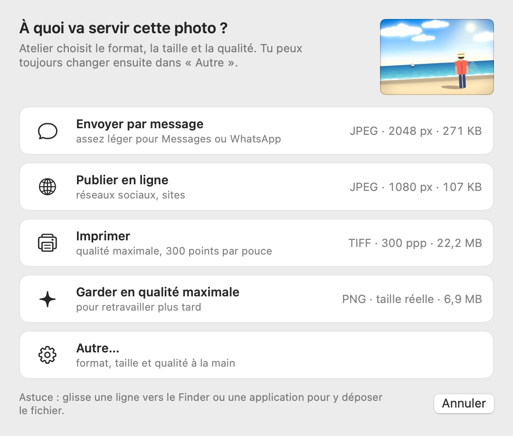
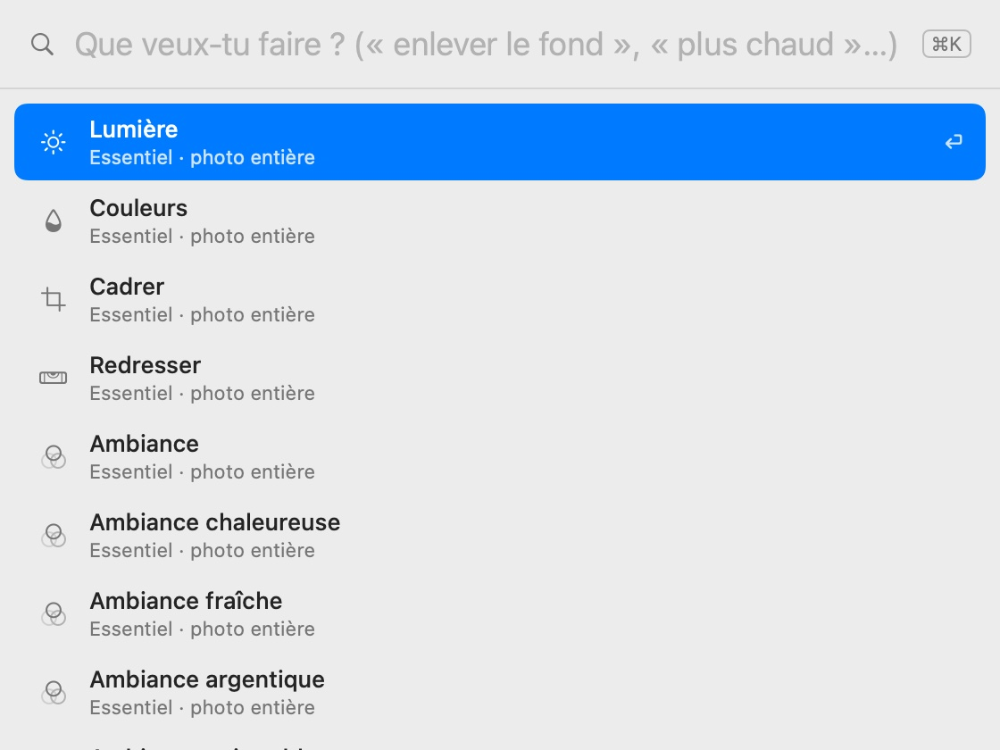
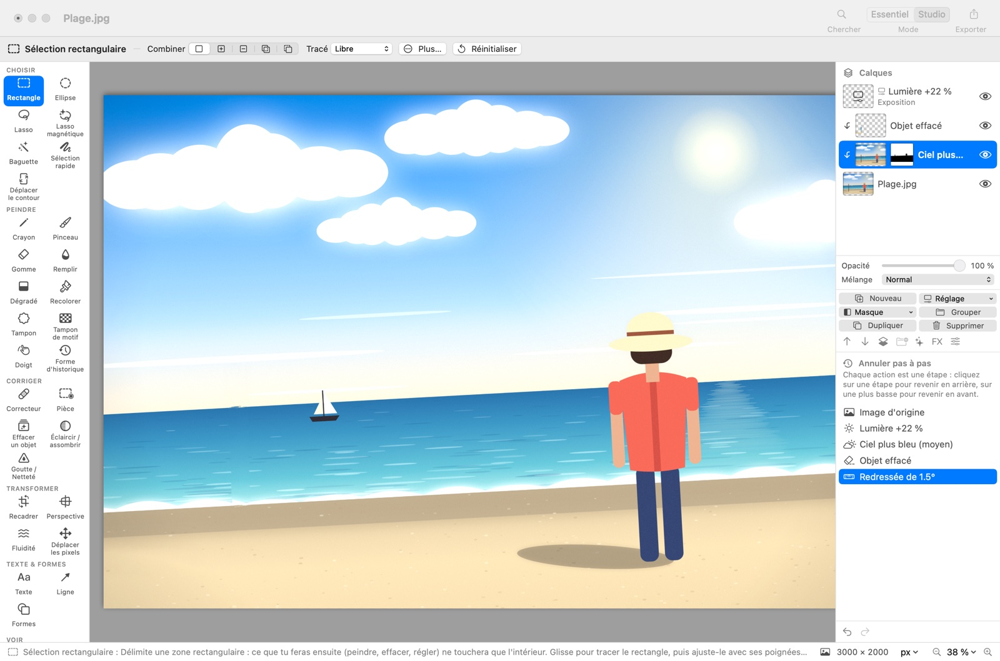
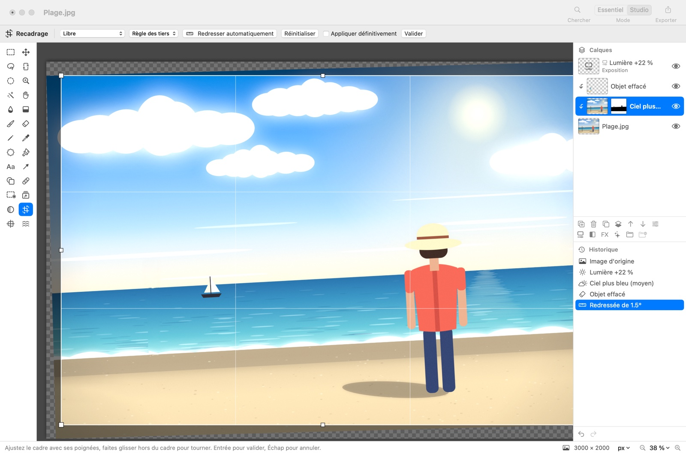
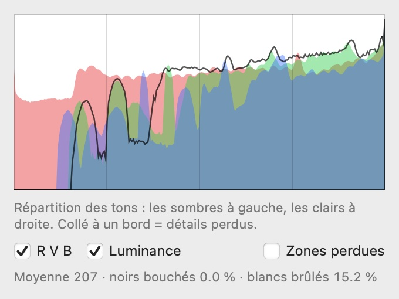

Atelier
Vos photos méritent un atelier.
Your photos deserve a studio.
Tus fotos merecen un taller.
As suas fotos merecem um ateliê.
Je foto’s verdienen een atelier.
Deine Fotos verdienen ein Atelier.
Le tue foto meritano un atelier.
Sur votre Mac. Sans compte, sans abonnement, sans nuage.
On your Mac. No account, no subscription, no cloud.
En tu Mac. Sin cuenta, sin suscripción, sin nube.
No seu Mac. Sem conta, sem assinatura, sem nuvem.
Op je Mac. Geen account, geen abonnement, geen cloud.
Auf deinem Mac. Ohne Konto, ohne Abo, ohne Cloud.
Sul tuo Mac. Senza account, senza abbonamento, senza cloud.
Gratuit. macOS 14 Sonoma ou plus récent, Mac Apple Silicon (M1 ou plus récent). Environ 7 Mo.
Free. macOS 14 Sonoma or later, Apple Silicon Mac (M1 or later). About 7 MB.
Gratis. macOS 14 Sonoma o posterior, Mac con Apple Silicon (M1 o posterior). Unos 7 MB.
Grátis. macOS 14 Sonoma ou posterior, Mac com Apple Silicon (M1 ou posterior). Cerca de 7 MB.
Gratis. macOS 14 Sonoma of nieuwer, Mac met Apple Silicon (M1 of nieuwer). Ongeveer 7 MB.
Kostenlos. macOS 14 Sonoma oder neuer, Mac mit Apple Silicon (M1 oder neuer). Etwa 7 MB.
Gratis. macOS 14 Sonoma o successivo, Mac con Apple Silicon (M1 o successivo). Circa 7 MB.

Deux visages, une seule app : Essentiel pour retoucher en montrant ce qui gêne, Studio pour tout contrôler. Même photo, même historique : on passe de l'un à l'autre d'un clic.
Two faces, one app: Essentiel to retouch by pointing at what bothers you, Studio to control everything. Same photo, same history: switch with one click.
Dos caras, una sola app: Essentiel para retocar señalando lo que molesta, Studio para controlarlo todo. Misma foto, mismo historial: se cambia con un clic.
Duas faces, um só app: Essentiel para retocar apontando o que incomoda, Studio para controlar tudo. Mesma foto, mesmo histórico: muda-se com um clique.
Twee gezichten, één app: Essentiel om te retoucheren door aan te wijzen wat stoort, Studio om alles te regelen. Dezelfde foto, dezelfde geschiedenis: wissel met één klik.
Zwei Gesichter, eine App: Essentiel, um zu retuschieren, indem man zeigt, was stört, Studio, um alles zu steuern. Gleiches Foto, gleicher Verlauf: ein Klick zum Wechseln.
Due volti, una sola app: Essentiel per ritoccare indicando ciò che disturba, Studio per controllare tutto. Stessa foto, stessa cronologia: si passa dall’uno all’altro con un clic.

Montrez ce qui vous gêne
Point at what bothers you
Señala lo que te molesta
Aponte o que incomoda
Wijs aan wat je stoort
Zeig, was dich stört
Indica ciò che ti disturba
- Cliquez sur le ciel, la personne, l'arrière-plan ou l'objet de trop. Atelier a déjà repéré les zones de la photo, sur votre Mac, et ne propose que ce qui a du sens pour chacune.Click the sky, the person, the background or the thing that shouldn't be there. Atelier has already found the areas of the photo, on your Mac, and only offers what makes sense for each one.Haz clic en el cielo, la persona, el fondo o el objeto que sobra. Atelier ya ha detectado las zonas de la foto, en tu Mac, y solo propone lo que tiene sentido para cada una.Clique no céu, na pessoa, no fundo ou no objeto a mais. O Atelier já identificou as zonas da foto, no seu Mac, e só propõe o que faz sentido para cada uma.Klik op de lucht, de persoon, de achtergrond of het voorwerp dat weg moet. Atelier heeft de zones van de foto al herkend, op je Mac, en stelt alleen voor wat voor elke zone zinvol is.Klick auf den Himmel, die Person, den Hintergrund oder das störende Objekt. Atelier hat die Bereiche des Fotos schon erkannt, auf deinem Mac, und bietet nur an, was für jeden Bereich sinnvoll ist.Fai clic sul cielo, sulla persona, sullo sfondo o sull’oggetto di troppo. Atelier ha già individuato le zone della foto, sul tuo Mac, e propone solo ciò che ha senso per ciascuna.
- Trois variantes calculées sur votre photo, pas sur une image d'exemple, puis un curseur pour affiner. Aucun réglage à comprendre avant de commencer.Three variants computed on your photo, not on a sample picture, then a slider to fine-tune. Nothing to understand before you start.Tres variantes calculadas sobre tu foto, no sobre una imagen de ejemplo, y luego un control para afinar. Nada que entender antes de empezar.Três variantes calculadas na sua foto, não numa imagem de exemplo, e depois um controle para afinar. Nada para entender antes de começar.Drie varianten berekend op jouw foto, niet op een voorbeeldplaatje, en daarna een schuifregelaar om te verfijnen. Niets te begrijpen voor je begint.Drei Varianten, berechnet auf deinem Foto, nicht auf einem Beispielbild, dann ein Regler zum Feinabstimmen. Nichts zu verstehen, bevor du anfängst.Tre varianti calcolate sulla tua foto, non su un’immagine di esempio, poi un cursore per rifinire. Niente da capire prima di cominciare.
- Des suggestions quand il y a lieu : « penchée de 1,5° », « un peu sombre », « sujet détecté ». Un clic pour accepter, ou on les ignore.Suggestions when they make sense: “tilted by 1.5°”, “a bit dark”, “subject detected”. One click to accept, or just ignore them.Sugerencias cuando procede: «inclinada 1,5°», «un poco oscura», «sujeto detectado». Un clic para aceptar, o se ignoran.Sugestões quando fazem sentido: “inclinada 1,5°”, “um pouco escura”, “pessoa detectada”. Um clique para aceitar, ou simplesmente ignore.Suggesties als het zinvol is: ‘1,5° scheef’, ‘een beetje donker’, ‘onderwerp herkend’. Eén klik om te accepteren, of je negeert ze.Vorschläge, wenn sie sinnvoll sind: „um 1,5° schief“, „etwas dunkel“, „Motiv erkannt“. Ein Klick zum Annehmen, oder du ignorierst sie.Suggerimenti quando servono: «inclinata di 1,5°», «un po’ scura», «soggetto rilevato». Un clic per accettare, oppure si ignorano.

Rien n'est jamais perdu
Nothing is ever lost
Nunca se pierde nada
Nada se perde nunca
Er gaat nooit iets verloren
Nichts geht je verloren
Niente va mai perso
- Le journal « Ce que j'ai fait » liste chaque retouche en français : Redressée, Objet effacé, Ciel plus bleu, Lumière +22 %. Chaque ligne se masque, se modifie ou se retire, dans n'importe quel ordre, même des jours plus tard.The “What I did” list names every edit in plain words: Straightened, Object removed, Bluer sky, Light +22%. Each line can be hidden, changed or removed, in any order, even days later.La lista «Lo que he hecho» nombra cada retoque con palabras sencillas: Enderezada, Objeto borrado, Cielo más azul, Luz +22 %. Cada línea se oculta, se modifica o se quita, en cualquier orden, incluso días después.A lista “O que eu fiz” nomeia cada retoque com palavras simples: Endireitada, Objeto apagado, Céu mais azul, Luz +22 %. Cada linha pode ser ocultada, alterada ou removida, em qualquer ordem, mesmo dias depois.De lijst ‘Wat ik heb gedaan’ benoemt elke bewerking in gewone woorden: Rechtgezet, Voorwerp verwijderd, Blauwere lucht, Licht +22 %. Elke regel kun je verbergen, wijzigen of weghalen, in elke volgorde, zelfs dagen later.Die Liste „Was ich gemacht habe“ benennt jede Änderung in klaren Worten: Begradigt, Objekt entfernt, Blauerer Himmel, Licht +22 %. Jede Zeile lässt sich ausblenden, ändern oder entfernen, in beliebiger Reihenfolge, auch Tage später.L’elenco «Cosa ho fatto» nomina ogni ritocco con parole semplici: Raddrizzata, Oggetto cancellato, Cielo più blu, Luce +22 %. Ogni riga si nasconde, si modifica o si toglie, in qualsiasi ordine, anche giorni dopo.
- Espace montre l'original tant qu'on appuie. Revenir à l'original n'est jamais grisé. Et ⌘Z défait toujours la dernière étape.Space shows the original while held. Back to original is never greyed out. And ⌘Z always undoes the last step.Espacio muestra el original mientras se mantiene pulsado. Volver al original nunca está desactivado. Y ⌘Z siempre deshace el último paso.Espaço mostra o original enquanto estiver pressionado. Voltar ao original nunca fica desativado. E ⌘Z sempre desfaz o último passo.Spatie toont het origineel zolang je de toets ingedrukt houdt. Terug naar origineel is nooit uitgegrijsd. En ⌘Z maakt altijd de laatste stap ongedaan.Leertaste zeigt das Original, solange sie gedrückt ist. Zurück zum Original ist nie ausgegraut. Und ⌘Z macht immer den letzten Schritt rückgängig.Spazio mostra l’originale finché lo tieni premuto. Torna all’originale non è mai disattivato. E ⌘Z annulla sempre l’ultimo passaggio.
- Tout est non destructif. Chaque retouche devient une couche (réglage, masque, calque) que le Studio montre telle quelle : on peut la reprendre à la main. Le fichier
.gouachegarde la photo d'origine, le journal et les calques.Everything is non-destructive. Each edit becomes a layer (adjustment, mask, pixels) that the Studio shows as is, ready to be reworked by hand. The.gouachefile keeps the original photo, the list and the layers.Todo es no destructivo. Cada retoque se convierte en una capa (ajuste, máscara, píxeles) que el Studio muestra tal cual, lista para retocarse a mano. El archivo.gouacheconserva la foto original, la lista y las capas.Tudo é não destrutivo. Cada retoque vira uma camada (ajuste, máscara, pixels) que o Studio mostra tal como é, pronta para ser retrabalhada à mão. O arquivo.gouacheguarda a foto original, a lista e as camadas.Alles is niet-destructief. Elke bewerking wordt een laag (aanpassing, masker, pixels) die de Studio precies zo toont, klaar om met de hand bij te werken. Het.gouache-bestand bewaart de originele foto, de lijst en de lagen.Alles ist nicht-destruktiv. Jede Änderung wird zu einer Ebene (Korrektur, Maske, Pixel), die das Studio genau so zeigt, bereit zur Nacharbeit von Hand. Die.gouache-Datei behält das Originalfoto, die Liste und die Ebenen.Tutto è non distruttivo. Ogni ritocco diventa un livello (regolazione, maschera, pixel) che lo Studio mostra così com’è, pronto da riprendere a mano. Il file.gouacheconserva la foto originale, l’elenco e i livelli.
Ce qu'Atelier sait faire
What Atelier can do
Lo que sabe hacer Atelier
O que o Atelier sabe fazer
Wat Atelier kan
Was Atelier kann
Cosa sa fare Atelier
Tout ce que font les grands éditeurs, sans avoir à les apprendre. Et tout se passe sur votre Mac.
Everything the big editors do, without having to learn them. And it all happens on your Mac.
Todo lo que hacen los grandes editores, sin tener que aprenderlos. Y todo ocurre en tu Mac.
Tudo o que os grandes editores fazem, sem precisar aprendê-los. E tudo acontece no seu Mac.
Alles wat de grote editors doen, zonder dat je ze hoeft te leren. En alles gebeurt op je Mac.
Alles, was die großen Editoren können, ohne sie lernen zu müssen. Und alles passiert auf deinem Mac.
Tutto ciò che fanno i grandi editor, senza doverli imparare. E tutto avviene sul tuo Mac.
Retouche guidée
Guided retouching
Retoque guiado
Retoque guiado
Begeleid retoucheren
Geführte Retusche
Ritocco guidato
Effacer un objet ou un passant, détourer une personne, flouter, retirer ou remplacer l'arrière-plan, dupliquer un objet, poser un texte.
Remove an object or a passer-by, cut out a person, blur, remove or replace the background, duplicate an object, add a text.
Borrar un objeto o un transeúnte, recortar a una persona, desenfocar, quitar o reemplazar el fondo, duplicar un objeto, añadir un texto.
Apagar um objeto ou um transeunte, recortar uma pessoa, desfocar, remover ou substituir o fundo, duplicar um objeto, inserir um texto.
Een voorwerp of voorbijganger verwijderen, een persoon uitknippen, de achtergrond vervagen, verwijderen of vervangen, een voorwerp dupliceren, tekst plaatsen.
Ein Objekt oder einen Passanten entfernen, eine Person freistellen, den Hintergrund weichzeichnen, entfernen oder ersetzen, ein Objekt duplizieren, einen Text setzen.
Cancellare un oggetto o un passante, scontornare una persona, sfocare, togliere o sostituire lo sfondo, duplicare un oggetto, aggiungere un testo.
Ciel et portrait
Sky and portrait
Cielo y retrato
Céu e retrato
Lucht en portret
Himmel und Porträt
Cielo e ritratto
Ciel plus bleu, plus dramatique ou remplacé (couchant, nuit…) avec la lumière harmonisée. Peau lissée, visage éclairci, lumière de portrait, yeux rouges.
Bluer, more dramatic or replaced sky (sunset, night…) with matched lighting. Smoothed skin, brightened face, portrait light, red eyes.
Cielo más azul, más dramático o reemplazado (atardecer, noche…) con la luz armonizada. Piel suavizada, rostro aclarado, luz de retrato, ojos rojos.
Céu mais azul, mais dramático ou substituído (pôr do sol, noite…) com a luz harmonizada. Pele suavizada, rosto clareado, luz de retrato, olhos vermelhos.
Blauwere, dramatischere of vervangen lucht (zonsondergang, nacht…) met aangepast licht. Gladdere huid, lichter gezicht, portretlicht, rode ogen.
Blauerer, dramatischerer oder ersetzter Himmel (Sonnenuntergang, Nacht …) mit angepasstem Licht. Geglättete Haut, aufgehelltes Gesicht, Porträtlicht, rote Augen.
Cielo più blu, più drammatico o sostituito (tramonto, notte…) con la luce armonizzata. Pelle levigata, viso schiarito, luce da ritratto, occhi rossi.
Lumière et couleurs
Light and colours
Luz y colores
Luz e cores
Licht en kleuren
Licht und Farben
Luce e colori
Lumière, couleurs, amélioration automatique, ambiances, courbes, niveaux, teinte et saturation, température, vibrance, noir et blanc, sépia…
Light, colours, auto enhance, moods, curves, levels, hue and saturation, temperature, vibrance, black and white, sepia…
Luz, colores, mejora automática, ambientes, curvas, niveles, tono y saturación, temperatura, intensidad, blanco y negro, sepia…
Luz, cores, melhoria automática, ambientes, curvas, níveis, matiz e saturação, temperatura, vibração, preto e branco, sépia…
Licht, kleuren, automatisch verbeteren, sferen, curven, niveaus, tint en verzadiging, temperatuur, levendigheid, zwart-wit, sepia…
Licht, Farben, automatische Verbesserung, Stimmungen, Gradationskurven, Tonwerte, Farbton und Sättigung, Temperatur, Dynamik, Schwarzweiß, Sepia …
Luce, colori, miglioramento automatico, atmosfere, curve, livelli, tonalità e saturazione, temperatura, vividezza, bianco e nero, seppia…
Netteté et bruit
Sharpness and noise
Nitidez y ruido
Nitidez e ruído
Scherpte en ruis
Schärfe und Rauschen
Nitidezza e rumore
Réduction du bruit qui garde les détails, netteté masquée, défloutage, agrandissement propre d'une petite image.
Noise reduction that keeps the detail, unsharp mask, deblurring, clean upscaling of a small picture.
Reducción de ruido que conserva los detalles, máscara de enfoque, corrección de desenfoque, ampliación limpia de una imagen pequeña.
Redução de ruído que preserva os detalhes, máscara de nitidez, correção de desfoque, ampliação limpa de uma imagem pequena.
Ruisonderdrukking die details bewaart, onscherp masker, onscherpte verwijderen, een kleine afbeelding netjes vergroten.
Rauschminderung, die Details erhält, Unscharfmaskierung, Entschärfen, sauberes Vergrößern eines kleinen Bildes.
Riduzione del rumore che conserva i dettagli, maschera di contrasto, correzione della sfocatura, ingrandimento pulito di un’immagine piccola.
Cadre et géométrie
Frame and geometry
Encuadre y geometría
Enquadramento e geometria
Kader en geometrie
Ausschnitt und Geometrie
Inquadratura e geometria
Recadrage non destructif, redressement automatique de l'horizon, perspective (un coin, une façade), maillage, fluidité.
Non-destructive crop, automatic horizon straightening, perspective (a corner, a façade), mesh warp, liquify.
Recorte no destructivo, enderezado automático del horizonte, perspectiva (una esquina, una fachada), malla, licuar.
Corte não destrutivo, endireitamento automático do horizonte, perspectiva (um canto, uma fachada), malha, dissolver.
Niet-destructief bijsnijden, automatisch rechtzetten van de horizon, perspectief (een hoek, een gevel), raster, vloeibaar maken.
Nicht-destruktives Zuschneiden, automatisches Begradigen des Horizonts, Perspektive (eine Ecke, eine Fassade), Gitter, Verflüssigen.
Ritaglio non distruttivo, raddrizzamento automatico dell’orizzonte, prospettiva (un angolo, una facciata), griglia, fluidifica.
RAW
RAW
RAW
RAW
RAW
RAW
RAW
Les fichiers RAW de votre appareil se développent sur le Mac (exposition, balance des blancs, bruit) et peuvent être redéveloppés à tout moment.
Your camera's RAW files are developed on the Mac (exposure, white balance, noise) and can be re-developed at any time.
Los archivos RAW de tu cámara se revelan en el Mac (exposición, balance de blancos, ruido) y pueden revelarse de nuevo en cualquier momento.
Os arquivos RAW da sua câmera são revelados no Mac (exposição, balanço de branco, ruído) e podem ser revelados de novo a qualquer momento.
De RAW-bestanden van je camera worden op de Mac ontwikkeld (belichting, witbalans, ruis) en kunnen op elk moment opnieuw worden ontwikkeld.
Die RAW-Dateien deiner Kamera werden auf dem Mac entwickelt (Belichtung, Weißabgleich, Rauschen) und lassen sich jederzeit neu entwickeln.
I file RAW della tua fotocamera si sviluppano sul Mac (esposizione, bilanciamento del bianco, rumore) e si possono risviluppare in qualsiasi momento.
Le Studio complet
The full Studio
El Studio completo
O Studio completo
De volledige Studio
Das komplette Studio
Lo Studio completo
Plus de 50 effets, 19 outils et plus (pinceau sensible à la pression, correcteur, pièce, tampon, formes, texte…), calques de réglage, masques, filtres modifiables, styles, groupes, écrêtage, 14 modes de fusion.
50+ effects, 19+ tools (pressure-sensitive brush, healing, patch, clone, shapes, text…), adjustment layers, masks, editable filters, styles, groups, clipping, 14 blend modes.
Más de 50 efectos, 19 herramientas y más (pincel sensible a la presión, corrector, parche, clonar, formas, texto…), capas de ajuste, máscaras, filtros modificables, estilos, grupos, recorte, 14 modos de fusión.
Mais de 50 efeitos, 19 ferramentas e mais (pincel sensível à pressão, corretor, remendo, carimbo, formas, texto…), camadas de ajuste, máscaras, filtros editáveis, estilos, grupos, recorte, 14 modos de mesclagem.
Meer dan 50 effecten, 19+ gereedschappen (drukgevoelig penseel, retoucheerpenseel, lapje, kloonstempel, vormen, tekst…), aanpassingslagen, maskers, bewerkbare filters, stijlen, groepen, uitknippen, 14 overvloeimodi.
Über 50 Effekte, 19+ Werkzeuge (druckempfindlicher Pinsel, Reparatur, Flicken, Kopierstempel, Formen, Text …), Einstellungsebenen, Masken, bearbeitbare Filter, Stile, Gruppen, Schnittmasken, 14 Füllmethoden.
Oltre 50 effetti, 19 e più strumenti (pennello sensibile alla pressione, correttore, toppa, timbro, forme, testo…), livelli di regolazione, maschere, filtri modificabili, stili, gruppi, ritaglio, 14 metodi di fusione.
Export par destination
Export by destination
Exportar según el destino
Exportar por destino
Exporteren per bestemming
Export nach Verwendungszweck
Esportazione per destinazione
Envoyer par message, publier en ligne, imprimer, garder en qualité maximale : Atelier choisit format, taille et qualité. Ou à la main : PNG, JPEG, HEIC, AVIF, TIFF, BMP, GIF, et bien d'autres.
Send by message, publish online, print, keep at maximum quality: Atelier picks the format, size and quality. Or by hand: PNG, JPEG, HEIC, AVIF, TIFF, BMP, GIF and many more.
Enviar por mensaje, publicar en línea, imprimir, guardar con la máxima calidad: Atelier elige formato, tamaño y calidad. O a mano: PNG, JPEG, HEIC, AVIF, TIFF, BMP, GIF y muchos más.
Enviar por mensagem, publicar on-line, imprimir, guardar em qualidade máxima: o Atelier escolhe formato, tamanho e qualidade. Ou à mão: PNG, JPEG, HEIC, AVIF, TIFF, BMP, GIF e muitos outros.
Versturen per bericht, online publiceren, afdrukken, in maximale kwaliteit bewaren: Atelier kiest formaat, grootte en kwaliteit. Of met de hand: PNG, JPEG, HEIC, AVIF, TIFF, BMP, GIF en veel meer.
Per Nachricht senden, online veröffentlichen, drucken, in bester Qualität behalten: Atelier wählt Format, Größe und Qualität. Oder von Hand: PNG, JPEG, HEIC, AVIF, TIFF, BMP, GIF und viele mehr.
Inviare per messaggio, pubblicare online, stampare, conservare alla massima qualità: Atelier sceglie formato, dimensioni e qualità. Oppure a mano: PNG, JPEG, HEIC, AVIF, TIFF, BMP, GIF e molti altri.
Fait pour le Mac
Made for the Mac
Hecho para el Mac
Feito para o Mac
Gemaakt voor de Mac
Für den Mac gemacht
Fatto per il Mac
7 langues, mode clair et mode sombre, les raccourcis ⌘ habituels, le trackpad (pincez pour zoomer), la palette ⌘K « Que veux-tu faire ? », l'écran d'accueil, les onglets.
7 languages, light and dark mode, the usual ⌘ shortcuts, the trackpad (pinch to zoom), the ⌘K palette “What do you want to do?”, the home screen, tabs.
7 idiomas, modo claro y oscuro, los atajos ⌘ de siempre, el trackpad (pellizca para hacer zoom), la paleta ⌘K «¿Qué quieres hacer?», la pantalla de inicio, pestañas.
7 idiomas, modo claro e escuro, os atalhos ⌘ de sempre, o trackpad (pinça para dar zoom), a paleta ⌘K “O que você quer fazer?”, a tela inicial, abas.
7 talen, lichte en donkere modus, de vertrouwde ⌘-sneltoetsen, het trackpad (knijp om te zoomen), het ⌘K-palet ‘Wat wil je doen?’, het startscherm, tabbladen.
7 Sprachen, heller und dunkler Modus, die gewohnten ⌘-Kurzbefehle, das Trackpad (zum Zoomen zusammenziehen), die ⌘K-Palette „Was möchtest du tun?“, der Startbildschirm, Tabs.
7 lingue, modalità chiara e scura, le solite abbreviazioni ⌘, il trackpad (pizzica per lo zoom), la palette ⌘K «Cosa vuoi fare?», la schermata iniziale, le schede.



Pour les experts
For experts
Para expertos
Para quem é do ramo
Voor experts
Für Profis
Per gli esperti

Le Studio, c'est l'éditeur complet : boîte à outils toujours visible, panneau Calques avec les sortes, masques, filtres modifiables et styles, historique cliquable, histogramme avec zones écrêtées, règles et unités.The Studio is the full editor: a toolbox always in view, a Layers panel with kinds, masks, editable filters and styles, a clickable history, a histogram with clipped areas, rulers and units.El Studio es el editor completo: caja de herramientas siempre visible, panel de Capas con tipos, máscaras, filtros modificables y estilos, historial clicable, histograma con zonas recortadas, reglas y unidades.O Studio é o editor completo: caixa de ferramentas sempre visível, painel de Camadas com tipos, máscaras, filtros editáveis e estilos, histórico clicável, histograma com zonas recortadas, réguas e unidades.De Studio is de complete editor: een gereedschapskist die altijd zichtbaar is, een Lagen-paneel met soorten, maskers, bewerkbare filters en stijlen, een klikbare geschiedenis, een histogram met afgekapte zones, linialen en eenheden.Das Studio ist der komplette Editor: immer sichtbarer Werkzeugkasten, Ebenen-Panel mit Arten, Masken, bearbeitbaren Filtern und Stilen, klickbarer Verlauf, Histogramm mit beschnittenen Bereichen, Lineale und Einheiten.Lo Studio è l’editor completo: cassetta degli attrezzi sempre in vista, pannello Livelli con tipi, maschere, filtri modificabili e stili, cronologia cliccabile, istogramma con zone tagliate, righelli e unità.
Ce que l'Essentiel a fait apparaît ici en couches : le ciel plus bleu est un calque de réglage avec son masque, l'objet effacé une couche de pixels écrêtée. Reprenez-les au pinceau, changez l'ordre, ajoutez les vôtres. Et « Noms techniques » affiche les vrais noms dans l'Essentiel.What Essentiel did shows up here as layers: the bluer sky is an adjustment layer with its mask, the removed object a clipped pixel layer. Rework them with a brush, reorder them, add your own. And “Technical names” shows the real names inside Essentiel.Lo que hizo Essentiel aparece aquí en capas: el cielo más azul es una capa de ajuste con su máscara, el objeto borrado una capa de píxeles recortada. Retócalas con el pincel, cambia el orden, añade las tuyas. Y «Nombres técnicos» muestra los nombres reales en Essentiel.O que o Essentiel fez aparece aqui em camadas: o céu mais azul é uma camada de ajuste com a sua máscara, o objeto apagado uma camada de pixels recortada. Retrabalhe com o pincel, mude a ordem, acrescente as suas. E “Nomes técnicos” mostra os nomes reais no Essentiel.Wat Essentiel deed, verschijnt hier als lagen: de blauwere lucht is een aanpassingslaag met masker, het verwijderde voorwerp een uitgeknipte pixellaag. Werk ze bij met een penseel, verander de volgorde, voeg je eigen lagen toe. En ‘Technische namen’ toont de echte namen in Essentiel.Was Essentiel gemacht hat, erscheint hier als Ebenen: der blauere Himmel ist eine Einstellungsebene mit Maske, das entfernte Objekt eine beschnittene Pixelebene. Bearbeite sie mit dem Pinsel, ändere die Reihenfolge, füge eigene hinzu. Und „Technische Namen“ zeigt die echten Namen in Essentiel.Ciò che Essentiel ha fatto compare qui come livelli: il cielo più blu è un livello di regolazione con la sua maschera, l’oggetto cancellato un livello di pixel ritagliato. Riprendili col pennello, cambia l’ordine, aggiungi i tuoi. E «Nomi tecnici» mostra i veri nomi in Essentiel.


Vie privée
Privacy
Privacidad
Privacidade
Privacy
Datenschutz
Privacy
Tout se passe sur l'appareil : la détection des zones, les retouches, le RAW. Aucune photo ne quitte votre Mac, aucun compte, aucune statistique, aucune publicité. Atelier fonctionne sans internet.
Everything happens on the device: area detection, edits, RAW. No photo ever leaves your Mac, no account, no analytics, no ads. Atelier works offline.
Todo ocurre en el dispositivo: la detección de zonas, los retoques, el RAW. Ninguna foto sale de tu Mac, sin cuenta, sin estadísticas, sin publicidad. Atelier funciona sin internet.
Tudo acontece no aparelho: a detecção de zonas, os retoques, o RAW. Nenhuma foto sai do seu Mac, sem conta, sem estatísticas, sem publicidade. O Atelier funciona sem internet.
Alles gebeurt op het apparaat: het herkennen van zones, de bewerkingen, RAW. Geen foto verlaat ooit je Mac, geen account, geen statistieken, geen reclame. Atelier werkt zonder internet.
Alles passiert auf dem Gerät: die Erkennung der Bereiche, die Bearbeitungen, RAW. Kein Foto verlässt je deinen Mac, kein Konto, keine Statistiken, keine Werbung. Atelier funktioniert ohne Internet.
Tutto avviene sul dispositivo: il riconoscimento delle zone, i ritocchi, il RAW. Nessuna foto lascia mai il tuo Mac, nessun account, nessuna statistica, nessuna pubblicità. Atelier funziona senza internet.
Mises à jour automatiques
Automatic updates
Actualizaciones automáticas
Atualizações automáticas
Automatische updates
Automatische Updates
Aggiornamenti automatici
Une fois par jour, Atelier regarde s'il existe une version plus récente et vous propose de l'installer en un clic, avec la liste des nouveautés. Rien d'autre n'est envoyé que la demande de ce fichier. Désactivable dans les Réglages.
Once a day, Atelier checks whether a newer version exists and offers to install it in one click, with the list of what's new. Nothing is sent but the request for that file. Can be turned off in Settings.
Una vez al día, Atelier comprueba si hay una versión más reciente y propone instalarla con un clic, con la lista de novedades. No se envía nada más que la petición de ese archivo. Se puede desactivar en Ajustes.
Uma vez por dia, o Atelier verifica se existe uma versão mais recente e propõe instalá-la com um clique, com a lista de novidades. Nada mais é enviado além do pedido desse arquivo. Pode ser desativado nos Ajustes.
Eén keer per dag kijkt Atelier of er een nieuwere versie is en biedt aan die met één klik te installeren, met de lijst van nieuwigheden. Er wordt niets anders verstuurd dan de aanvraag van dat bestand. Uit te schakelen in Instellingen.
Einmal am Tag sieht Atelier nach, ob es eine neuere Version gibt, und bietet an, sie mit einem Klick zu installieren, mit der Liste der Neuerungen. Außer der Anfrage dieser Datei wird nichts gesendet. In den Einstellungen abschaltbar.
Una volta al giorno, Atelier controlla se esiste una versione più recente e propone di installarla con un clic, con l’elenco delle novità. Non viene inviato nient’altro che la richiesta di quel file. Disattivabile nelle Impostazioni.
Questions fréquentes
Frequently asked questions
Preguntas frecuentes
Perguntas frequentes
Veelgestelde vragen
Häufige Fragen
Domande frequenti
macOS dit qu'il ne peut pas vérifier l'app. Que faire ?macOS says it can't verify the app. What now?macOS dice que no puede verificar la app. ¿Qué hago?O macOS diz que não consegue verificar o app. E agora?macOS zegt dat de app niet kan worden geverifieerd. Wat nu?macOS sagt, die App könne nicht überprüft werden. Was tun?macOS dice che non può verificare l’app. Che fare?
Atelier ne vient pas de l'App Store : la première fois, macOS affiche une alerte. Cliquez sur Terminé (pas « Placer dans la corbeille »), puis ouvrez Réglages Système › Confidentialité et sécurité, descendez jusqu'à « Sécurité » et cliquez sur Ouvrir quand même. C'est à faire une seule fois. Les quatre étapes en images →
Atelier does not come from the App Store, so macOS shows a warning the first time. Click Done (not “Move to Trash”), then open System Settings › Privacy & Security, scroll down to “Security” and click Open Anyway. You only do this once. The four steps, illustrated →
Atelier no viene del App Store: la primera vez, macOS muestra un aviso. Haz clic en OK (no en «Trasladar a la papelera»), luego abre Ajustes del Sistema › Privacidad y seguridad, baja hasta «Seguridad» y haz clic en Abrir igualmente. Solo hay que hacerlo una vez. Los cuatro pasos →
O Atelier não vem da App Store: na primeira vez, o macOS mostra um aviso. Clique em OK (não em “Mover para o Lixo”), depois abra Ajustes do Sistema › Privacidade e Segurança, desça até “Segurança” e clique em Abrir Mesmo Assim. Só é preciso fazer isso uma vez. Os quatro passos →
Atelier komt niet uit de App Store: de eerste keer toont macOS een waarschuwing. Klik op Gereed (niet op ‘Verplaats naar prullenmand’), open daarna Systeeminstellingen › Privacy en beveiliging, scrol naar ‘Beveiliging’ en klik op Toch openen. Dit hoeft maar één keer. De vier stappen →
Atelier stammt nicht aus dem App Store: Beim ersten Mal zeigt macOS eine Warnung. Klicke auf Fertig (nicht „In den Papierkorb legen“), öffne dann Systemeinstellungen › Datenschutz & Sicherheit, scrolle zu „Sicherheit“ und klicke auf Dennoch öffnen. Das ist nur einmal nötig. Die vier Schritte →
Atelier non arriva dall’App Store: la prima volta macOS mostra un avviso. Fai clic su Fine (non su «Sposta nel cestino»), poi apri Impostazioni di Sistema › Privacy e sicurezza, scorri fino a «Sicurezza» e fai clic su Apri comunque. Va fatto una sola volta. I quattro passaggi →
Quels formats sont lus et écrits ?Which formats are read and written?¿Qué formatos lee y escribe?Que formatos ele lê e grava?Welke bestandsformaten worden gelezen en geschreven?Welche Formate werden gelesen und geschrieben?Quali formati legge e scrive?
En lecture et en écriture : PNG, JPEG, HEIC, AVIF, TIFF, BMP, GIF, TGA, ICO, DDS, JPEG 2000. En lecture : WebP, JPEG XL, PSD (avec calques), et les RAW des appareils photo. Le format .gouache garde les calques, les masques, le journal et la photo d'origine.
Read and write: PNG, JPEG, HEIC, AVIF, TIFF, BMP, GIF, TGA, ICO, DDS, JPEG 2000. Read: WebP, JPEG XL, PSD (with layers), and camera RAW files. The .gouache format keeps layers, masks, the edit list and the original photo.
Lectura y escritura: PNG, JPEG, HEIC, AVIF, TIFF, BMP, GIF, TGA, ICO, DDS, JPEG 2000. Lectura: WebP, JPEG XL, PSD (con capas) y los RAW de las cámaras. El formato .gouache conserva capas, máscaras, la lista de retoques y la foto original.
Leitura e gravação: PNG, JPEG, HEIC, AVIF, TIFF, BMP, GIF, TGA, ICO, DDS, JPEG 2000. Leitura: WebP, JPEG XL, PSD (com camadas) e os RAW das câmeras. O formato .gouache guarda camadas, máscaras, a lista de retoques e a foto original.
Lezen en schrijven: PNG, JPEG, HEIC, AVIF, TIFF, BMP, GIF, TGA, ICO, DDS, JPEG 2000. Lezen: WebP, JPEG XL, PSD (met lagen) en RAW-bestanden van camera’s. Het .gouache-formaat bewaart lagen, maskers, de bewerkingslijst en de originele foto.
Lesen und Schreiben: PNG, JPEG, HEIC, AVIF, TIFF, BMP, GIF, TGA, ICO, DDS, JPEG 2000. Lesen: WebP, JPEG XL, PSD (mit Ebenen) und Kamera-RAW. Das Format .gouache behält Ebenen, Masken, die Änderungsliste und das Originalfoto.
Lettura e scrittura: PNG, JPEG, HEIC, AVIF, TIFF, BMP, GIF, TGA, ICO, DDS, JPEG 2000. Lettura: WebP, JPEG XL, PSD (con livelli) e i RAW delle fotocamere. Il formato .gouache conserva livelli, maschere, l’elenco dei ritocchi e la foto originale.
Où sont mes fichiers .gouache ?Where are my .gouache files?¿Dónde están mis archivos .gouache?Onde estão os meus arquivos .gouache?Waar zijn mijn .gouache-bestanden?Wo sind meine .gouache-Dateien?Dove sono i miei file .gouache?
Là où vous les avez enregistrés : Atelier n'a pas de bibliothèque cachée, ce sont des fichiers ordinaires du Finder. Un .gouache s'ouvre d'un double-clic et reprend exactement où vous en étiez, journal compris. Pour partager la photo, exportez-la (⌘⇧E) : le .gouache reste votre original.
Wherever you saved them: Atelier has no hidden library, they are ordinary Finder files. A .gouache opens with a double-click and picks up exactly where you left off, edit list included. To share the photo, export it (⌘⇧E): the .gouache remains your original.
Donde los guardaste: Atelier no tiene una biblioteca oculta, son archivos normales del Finder. Un .gouache se abre con doble clic y retoma exactamente donde lo dejaste, lista de retoques incluida. Para compartir la foto, expórtala (⌘⇧E): el .gouache sigue siendo tu original.
Onde você os salvou: o Atelier não tem biblioteca escondida, são arquivos normais do Finder. Um .gouache abre com um duplo clique e retoma exatamente onde você parou, lista de retoques incluída. Para compartilhar a foto, exporte-a (⌘⇧E): o .gouache continua sendo o seu original.
Waar je ze hebt bewaard: Atelier heeft geen verborgen bibliotheek, het zijn gewone Finder-bestanden. Een .gouache opent met een dubbelklik en gaat precies verder waar je gebleven was, bewerkingslijst inbegrepen. Om de foto te delen, exporteer je hem (⌘⇧E): het .gouache-bestand blijft je origineel.
Dort, wo du sie gesichert hast: Atelier hat keine versteckte Mediathek, es sind gewöhnliche Finder-Dateien. Eine .gouache-Datei öffnet sich per Doppelklick und macht genau dort weiter, wo du aufgehört hast, Änderungsliste inklusive. Zum Teilen exportierst du das Foto (⌘⇧E): die .gouache-Datei bleibt dein Original.
Dove li hai salvati: Atelier non ha una libreria nascosta, sono normali file del Finder. Un .gouache si apre con un doppio clic e riprende esattamente da dove eri rimasto, elenco dei ritocchi compreso. Per condividere la foto, esportala (⌘⇧E): il .gouache resta il tuo originale.
J'avais Gouache. Qu'est-ce qui change ?I had Gouache. What changes?Tenía Gouache. ¿Qué cambia?Eu tinha o Gouache. O que muda?Ik had Gouache. Wat verandert er?Ich hatte Gouache. Was ändert sich?Avevo Gouache. Cosa cambia?
Seulement le nom et l'icône : Atelier est la suite de Gouache. La mise à jour automatique l'installe à la place de l'ancienne version, vos fichiers .gouache et vos réglages sont conservés. Si le fichier dans Applications s'appelle encore « Gouache », vous pouvez le renommer « Atelier » sans risque.
Only the name and the icon: Atelier is the continuation of Gouache. The automatic update installs it in place of the old version; your .gouache files and settings are kept. If the file in Applications is still called “Gouache”, you can safely rename it “Atelier”.
Solo el nombre y el icono: Atelier es la continuación de Gouache. La actualización automática lo instala en lugar de la versión anterior; tus archivos .gouache y tus ajustes se conservan. Si el archivo en Aplicaciones aún se llama «Gouache», puedes renombrarlo «Atelier» sin riesgo.
Só o nome e o ícone: o Atelier é a continuação do Gouache. A atualização automática instala-o no lugar da versão antiga; os seus arquivos .gouache e ajustes são mantidos. Se o arquivo em Aplicativos ainda se chama “Gouache”, pode renomeá-lo “Atelier” sem risco.
Alleen de naam en het symbool: Atelier is de voortzetting van Gouache. De automatische update installeert het in plaats van de oude versie; je .gouache-bestanden en instellingen blijven behouden. Heet het bestand in Programma’s nog ‘Gouache’, dan kun je het gerust hernoemen naar ‘Atelier’.
Nur Name und Symbol: Atelier ist die Fortsetzung von Gouache. Das automatische Update installiert es anstelle der alten Version; deine .gouache-Dateien und Einstellungen bleiben erhalten. Heißt die Datei in „Programme“ noch „Gouache“, kannst du sie gefahrlos in „Atelier“ umbenennen.
Solo il nome e l’icona: Atelier è la continuazione di Gouache. L’aggiornamento automatico lo installa al posto della vecchia versione; i tuoi file .gouache e le impostazioni sono conservati. Se il file in Applicazioni si chiama ancora «Gouache», puoi rinominarlo «Atelier» senza rischi.